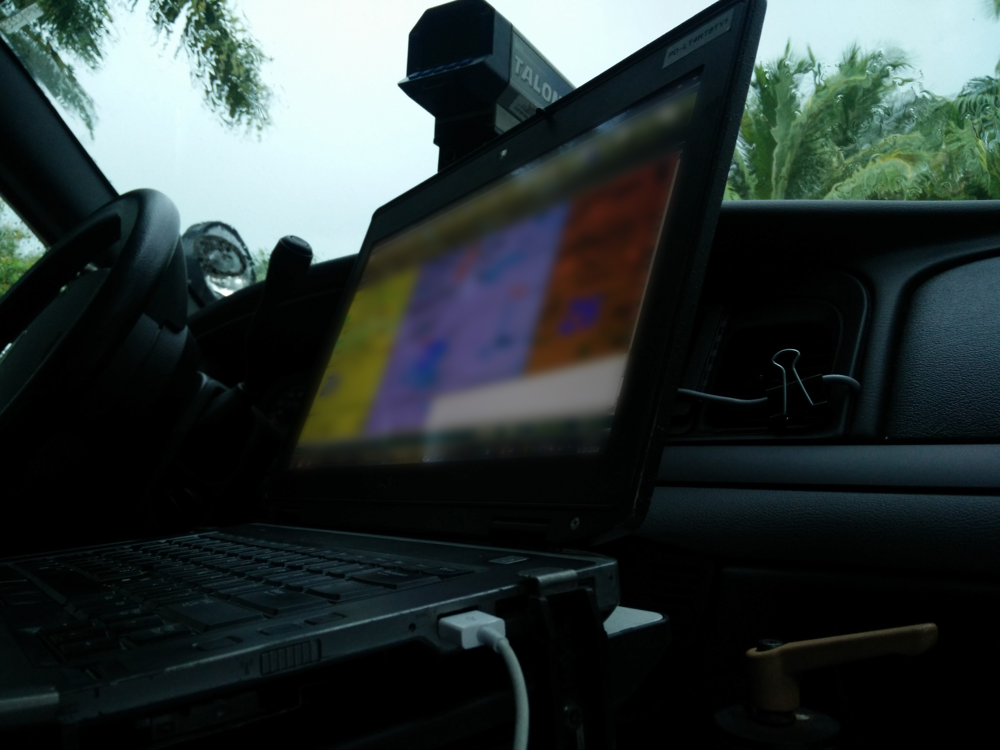
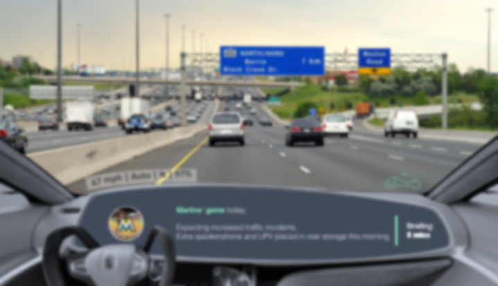
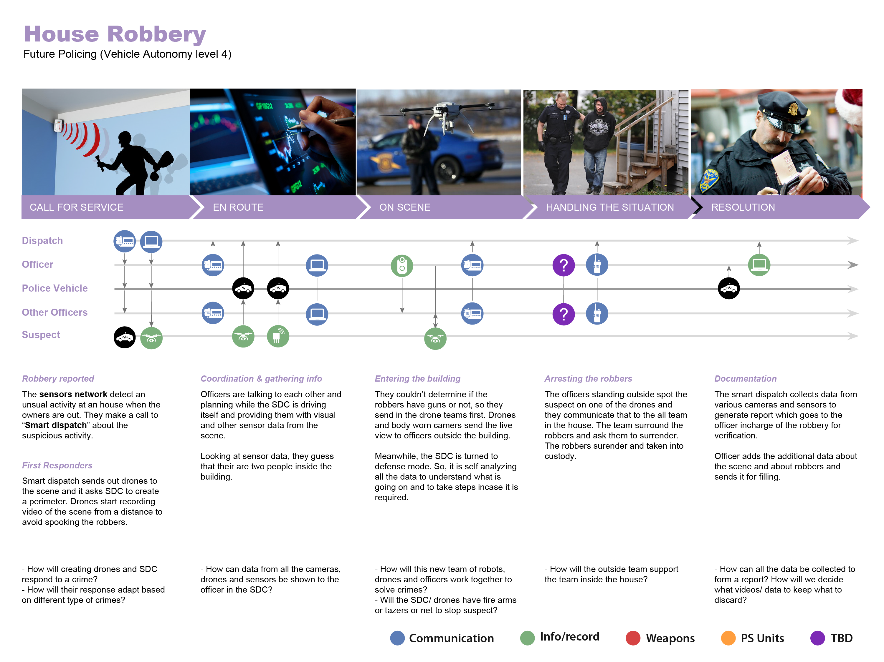

Introduction
Summary: I spent summer of 2016 at 'Innovation and Design Lab' at Motorola Solutions as a UX Design and research intern. I collaborated with two other interns to design interactions and experience of future police vehicles. Showed how it can decrease cognitive load experienced by officers and improve community relationship.
Project Duration: May'16 - Aug'16 | Team: 3 | As a part of internship at Motorola Solutions
My tasks: Contextual Inquiry, Qualitative Research, Literature Research, User Journey, Conceptualization, Usability Testing
Policing with self-driving cars
Self-driving cars market is changing rapidly. Many tech companies and automobile companies have released their vision of self-driving cars targeting different sectors like Uber targeting commercial travel. A lot of these visions are interesting but what are its ripple effects on the working style of police officers?
Envisioning how can the life of patrol officer and policing in general change with self-driving cars?
This project is under NDA so I can't share all the details but here is a glimpse of what I did during the internship.
A day in a life of the patrol officer
To understand the tasks, actions, and behavior of a patrol officer, I went on a ride-along with a patrol officer. During this ride-along, I was looking for her pattern of using her vehicle, her communication habits and her day-to-day activities (How does she start her day? What happens once she receives a call from dispatch? How is she using the space within her police vehicle?).
{kind=link}
What do they need in moments that matter?
After the ride along, I got together with other interns to design user journey for police officers. Analyzing primary and secondary research data, we grouped officer activities/ tasks in 5 key touchpoints: start of the shift, proactive patrol etc. We further expanded these touch-points using AEIOU mapping into user needs, tools, officer activities/ tasks, and information flow.

Prototyping the Officer-Vehicle partnership
We went through multiple brainwriting, brainstorming, design critique, and iteration sessions to come up with designs. For envisioning future with self-driving cars, we tried to reduce the cognitive load of an officer by building a partnership between the officer and our self-driving vehicle. We created a few simulated scenarios where the police officers would leverage the capabilities of future cars. 
{kind=link}
House Robery of the future
We had designed existing scenarios based on our and previous ride along eexperiences. We wanted to see how these scenarios will evolve with future police equipments. They acted as initial testing ground for future that we envisioned.
{kind=link}
Can we build the trust?
We ran through these scenarios with the police officers to see if they will trust a vehicle with a task? what will be they need to build partnership with a vehicle? Police officers were happy to delegate some of the tasks to the vehicle such as writing report. One of the officers typed on their laptop along with driving at the same time they said it will be impactful for not having to do both of them at the same time.
{kind=link}
{kind=link}
Presenting to stakeholders
We presnted the concept and findings to stakeholders, which got them discussing some of the patent and directional opportunities.